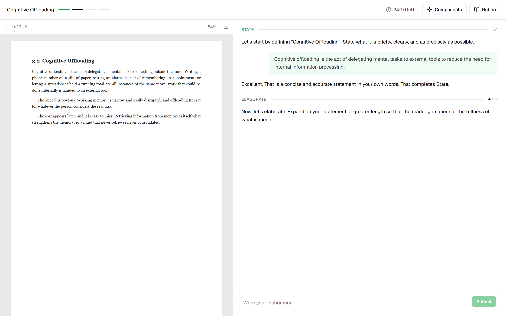

Good day!
Thank you for agreeing to take part today. This study examines which way of studying an expository text best improves your understanding of the concept it explains.
You will complete the steps below. They depend on the group you were randomly assigned to through the ID slip you drew.
You are in the {{groupName}}.
{{total}}
Each step has its own time limit. You won’t see a timer, but we’ll let you know when time is running low. If you finish a step early, you go on to the next one.
Pre-test
This checks what you already know about strategic offensives before you read anything. Describe the concept in your own words as best you can, even if it is new to you.
You have 5 minutes.
StartPost-test
This checks what you understand about strategic offensives now. The reading won’t be shown. For each question you answer, tick how sure you are.
You have 30 minutes.
StartPre-test
Answer this in your own words before you read.
Define what a strategic offensive is, to the best of your ability.
About SENSEE-I
SENSEE-I is a learning tool that helps you understand a concept from a reading. It uses SEE-I, four steps that show how well you understand something:
The learning tool checks each answer. If something is missing, it tells you what, and you try again. Once your answer passes, you move to the next step.
How the session works

{{dTitle}}
You have 35 minutes for two parts:
- Reading. Read the material on this screen until you understand the concept of strategic offensives. We suggest about 10 minutes.
- Tutoring session. When you press Done, the screen splits: the reading stays on one side, and the learning tool opens on the other. There you explain the concept through the four SEE-I steps.
You can still look at the reading during the session, but press Done only once you’re confident you understand the concept.
{{dBody}}
{{dBody2}}